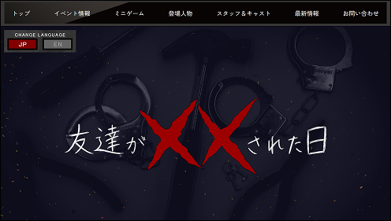
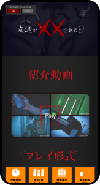

友達がXXされた日 ｜公式サイト
担当範囲：企画 / デザイン / コーディング / サイト運用
この作品は、罠が仕掛けられたビルに誘拐された友達を 救出することを目的とした、体験型のリアル脱出ゲームです。 プレイヤーは会場内を移動しながら仕掛けや謎を解き、 友達の救出を目指します。
Webサイトは、ゲーム内でも重要な要素となる 「エレベーター」をモチーフにデザインし、 作品の緊張感や不穏な雰囲気が伝わる世界観を意識しました。
また、脱出ゲームの面白さを損なわないよう、 ゲーム内の仕掛けや謎については ネタバレにならない範囲で情報を掲載しています。 その中でも、初めて作品を知るユーザーが 「どんなゲームなんだろう」と興味を持てるよう、 ビジュアルや情報の見せ方を工夫しました。
このサイトを見る →イベント情報への導線設計
作品に興味を持ったユーザーが、 開催日時や場所などのイベント情報を迷わず確認できるよう、 情報の配置や導線を整理しました。 作品の世界観を楽しんでもらいながら、 参加に必要な情報へ自然にたどり着ける構成を意識しています。
工夫したポイント
- 01 必要な情報を分かりやすく整理
- 02 作品紹介からイベント情報へ自然に誘導
- 03 初めて見る人でも迷わない構成
ミニゲーム
Webサイト上でも作品の雰囲気を体験できるよう、 ミニゲームを取り入れました。 展示会場に足を運ぶ前から作品に触れてもらうことで、 ゲーム本編への興味や期待感を高めることを意識しています。
工夫したポイント
- 01 本編につながる体験を用意
- 02 ネタバレを抑えた内容設計
- 03 気軽に遊べる操作性
世界観を意識したデザイン
ゲーム内で重要な要素となる 「エレベーター」をモチーフに、 サイト全体のデザインを制作しました。 作品の緊張感や不穏な雰囲気をWebサイトからも感じてもらえるよう、 色使いや装飾、UIまで一貫して世界観を表現しています。
工夫したポイント
- 01 エレベーターをモチーフにしたデザイン
- 02 不穏さを感じさせるビジュアル
- 03 ゲームの世界観を表現したUI
レスポンシブ対応
PCだけでなく、展示会場への移動中やSNSからアクセスした ユーザーがスマートフォンでも快適に閲覧できるよう、 レスポンシブ対応を行いました。 画面サイズに合わせてレイアウトや画像、 文字サイズ、操作部分を調整しています。
工夫したポイント
- 01 スマートフォンでも世界観を維持
- 02 情報を縦方向に整理
- 03 タップ操作を意識